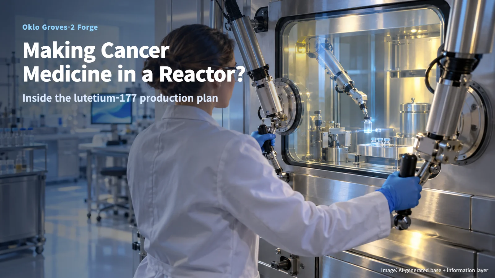
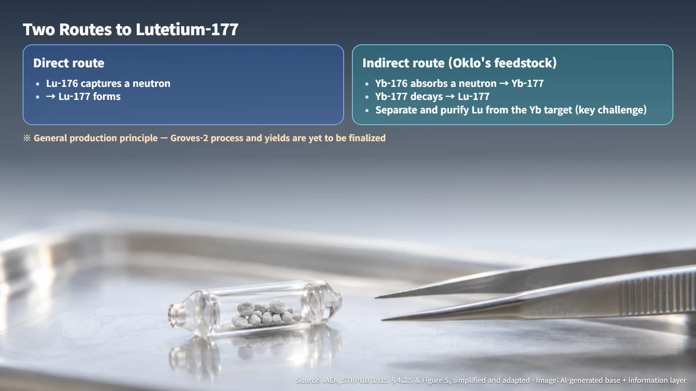
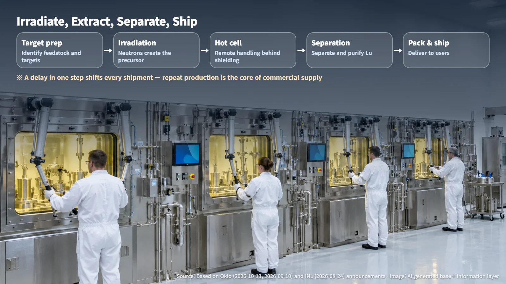
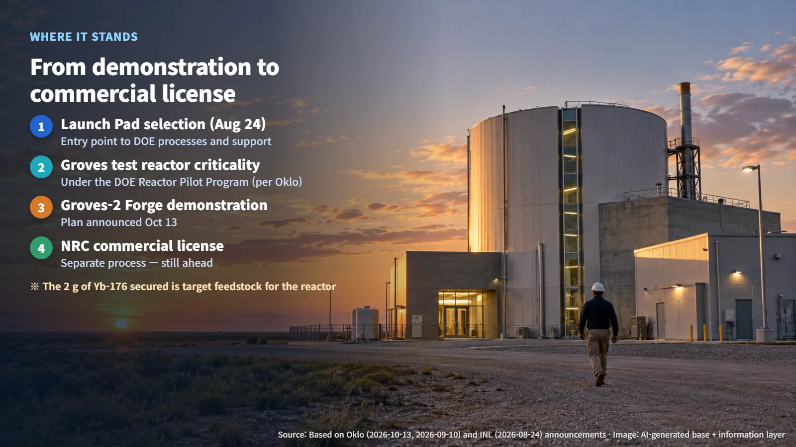

United States · Medical Isotopes
Making Cancer-Medicine Ingredients in a Reactor? Oklo's Groves-2 and Lutetium-177
Oklo plans to turn its Groves test reactor experience into a facility that irradiates, processes and ships lutetium-177 for targeted cancer therapy, with repeat production and an NRC commercial license still ahead.
Mention a nuclear reactor and most people picture a huge power station sending electricity into the grid. So the idea that a reactor can make the raw material for something used in hospitals may sound a little unexpected. The Groves-2 Forge plan that Oklo announced in the United States on October 13, 2026, is exactly that kind of project. Let's walk through how a reactor produces medical isotopes, and where this particular plan stands today.

How a Reactor Makes Raw Material for Medicine
Groves-2 Forge is being pursued as a demonstration facility to irradiate, produce and process isotopes (atoms of the same element that carry different numbers of neutrons in their nuclei). Its initial target is lutetium-177 (Lu-177), which is used in targeted cancer therapy.
A reactor core is full of moving neutrons. Place a chosen material inside, and some of its nuclei absorb neutrons and turn into different nuclides. This step is called irradiation. Technical guidance from the International Atomic Energy Agency (IAEA) describes two routes to Lu-177. The direct route relies on Lu-176 capturing a neutron. The indirect route runs ytterbium-176 (Yb-176) → Yb-177 → Lu-177.
The hard part of the indirect route comes next. The lutetium that forms has to be separated and purified from the ytterbium target it came from, and the two elements behave almost identically in chemistry. Picture a pile of sand in which a tiny number of grains look nearly the same as all the others, and you have to pick out only those few. The IAEA explains that this purification is key to obtaining Lu-177 with high specific activity (the strength of radioactivity per unit mass) through the indirect route. The detailed process for Groves-2 has yet to be finalized.

Irradiate, Extract, Separate, Ship
Oklo plans to combine its experience with the Groves test reactor with hot cell processing, separation, recovery, packaging and transport. Laid out as a sequence, the flow is: target preparation → reactor irradiation → hot cell processing → separation and recovery → packaging and transport.
A hot cell is a shielded enclosure in which radioactive materials are handled and processed remotely. It is a working space, built for active processing. Irradiated targets are moved behind the shielding wall, and operators work on them from outside using remote manipulators.
Placing the irradiation facility and the hot cells close together creates room to cut down on transfer steps. At the same time, a delay in any single process ripples through the entire shipping schedule. That is why each step has to be managed as part of one continuous flow. The public announcements so far have not disclosed a final layout for Groves-2, the number of hot cells, the separation method or the target recovery rate.

Two Grams of Feedstock on the Road to Repeat Production
In a September blog post, Oklo explained that it had secured 2 g of enriched Yb-176 before the Groves-1 criticality, and highlighted its collaboration with the U.S. company Actinide. That 2 g is the quantity of target feedstock to be loaded into the reactor. Annual output, sales volume and medicine supply records will come from later production. Turning the 2 g into a saleable product quantity would require the actual irradiation conditions, separation losses, shipping timing and product specifications, and none of these have been disclosed.
The heart of commercial supply is the ability to produce and ship products that meet customer specifications, again and again. One excellent run is only the starting point. The questions to examine together are whether irradiation-to-separation yields stay stable across many runs under the same conditions, whether radionuclidic and chemical purity meet customer specifications, how much residual target material and waste each run leaves, and whether schedules hold once maintenance and transport are included. Think of a bakery: baking one delicious loaf is one achievement, and delivering the same quality every morning is another.
From Demonstration Selection to Commercial License
Some background helps here. On August 24, the National Reactor Innovation Center (NRIC) at Idaho National Laboratory (INL), part of the U.S. Department of Energy (DOE), selected 13 projects from 12 developers for the Nuclear Energy Launch Pad, and Oklo was among them. What is new in the October announcement is the specific direction for Groves-2 rather than the selection itself.
Selection for the Launch Pad is an entry point to DOE authorization processes and to expert, facility and regulatory support. Each individual facility still needs its own approval to be built and operated. Oklo states that the Groves test reactor reached criticality under the DOE Reactor Pilot Program, and it describes a separate path for Groves-2: the plan is to move to commercial scale after obtaining the appropriate license from the U.S. Nuclear Regulatory Commission (NRC). Moving from DOE-backed demonstration experience to commercial operation therefore requires its own NRC licensing step.

One more record is worth placing correctly. The NRC materials license that Oklo announced on March 17 covers radium-226 (Ra-226) activities at the Idaho Falls radiochemistry laboratory, while reactor licensing for Groves-2 is a separate step still ahead. The latest announcement also did not include a start date for commercial production, a confirmed supply volume or any record of deliveries to customers.
The principle of using a reactor to make the raw material for medical isotopes is well documented in international technical literature. Between "we can make it" and "we can supply it reliably," however, stand two gates: repeat production and a commercial license. Read the news against those two gates, and it becomes much clearer which stage this project has reached.